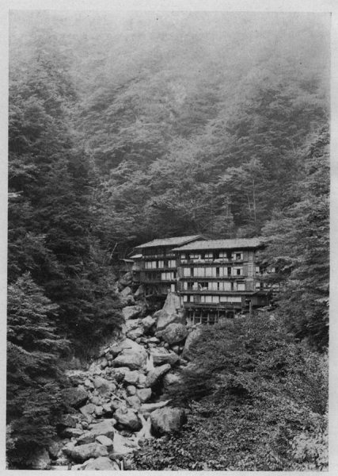
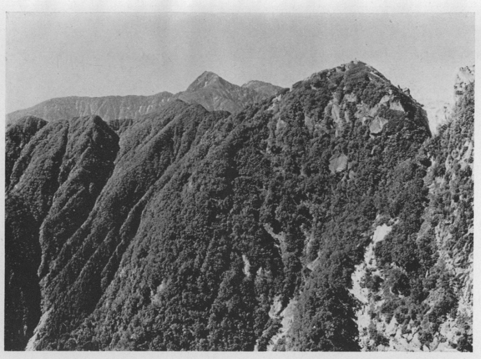

寝覚の耳元へいきなりザアと大雨の降るような谷川の音が聞えた。目を開けると暁の色はまばらに繰り寄せた雨戸の間を洩れて、張り換えた障子に明るく映っている。宵の内に迷い込んだものと見えて、一
疋の日蔭蝶が障子の桟に止まっているのが目に付く。何処からともなく淡い温泉の香が漂って来る。
静に起き上って外面を眺めた。白い
靄の
罩めた湯川の谷を隔てて対岸の盛な青葉の茂みの中に、山百合の花が点々と白く浮き出している。時折谷の空で鳴く
杜鵑の声が、水音にも紛れず耳に響く。
顔洗いがてら下へ降りて湯に入った。湯は高い岩壁の下から湧き出して、一部は家の中に導かれ、一部は
其儘岩の浴槽に湛えられている。湯滝なども作ってある。それに肩を打せながらジッと浸っていると、もう山へ入って大分経ったような気もする。けれども実は昨日朝香宮殿下のお伴をして
鰍沢を出発し、南アルプスの登山口の一であるこの西山温泉へ着いた
許りなのだ。環境の大なる変化が時のへだたりをも大きく見せるのである。殿下に随伴する一行は、お附武官の藤岡少佐、宮家附の浅野宮内省属、山田写真師、
槇君
及私の外に、軍用鳩調査委員の伊東中尉が八羽の鳩を携えて参加した。山梨県庁からは石塚
都留中学校長、加島医師、丸山警部補、斎木巡査の四人がお伴し、それに『東京朝日』の特派員大東氏、同じく『報知』の森山氏を合せても、十二人に過ぎないのであるが、人夫は途中から帰らせる者を除いても、四十人近くを要するので、一行は総計五十人を超えていた。こんな大人数の登山隊が南アルプスに入り込んだのは、恐らく空前であったろうと思う。
鰍沢では古那屋が御旅館であった。七月十九日の午後二時頃に殿下が御着きになると、お伴の人達は申す迄もないが、新聞社や通信社の特派員達も、この家を宿とする方が何かにつけて好都合なので、階下はどの室も忽ち満員の状況であった。夜になっても買物などに出歩く人の多いせいか、町の中は何となくざわめいていた。
二十日は早朝から、殿下の御旅立を拝送しようとする町の人や近在の人達で、古那屋の前は賑っていた。殿下のお召料にと山梨県庁では、特に一頭の逞しい栗毛の駒を用意していたので、
其の好意を無にし給わじとのお心遣から、草鞋をお穿きになったお
足拵えにも拘らせられず、それに召されて、午前六時四十分に古那屋を御出発になった。
天候が安定して、登山には誂向きの日和となったので、朝のうちから相当に暑い。畔沢を経て小室の妙法寺にお着きになったのは七時半頃であったろう。此寺は小身延といわれている程あって、立派なものだ。徳栄山と号し、山門に喝道峰と大書した額が掲げてある。かねて御休息所に
充てられ、茶菓の用意がしてあった。それに寺からのお願い出もあったので、暫く御くつろぎの上記念の落葉松をお手植えになって、八時十五分に御出発になる。
これから矢川の部落を過ぎ、
出頂の茶屋まで高距九百米、登り一方である。熬りつけるような日を背に受けて、木蔭の少ない風も吹かぬ長い峠路を、喘ぎ喘ぎ登る暑さ苦しさ。汗は止め
度なく流れて、皆
茹ったような顔をしている。喉は渇くが水がない。矢川の部落まで行くと漸く谷川が流れていた。村では其水を飲料としているのであろう、他に井戸というものが見当らない。生温い水で好ましくはないが皆それを飲んで渇を
医した。運悪く私は其れにあてられ、腸をいためて殆んど旅の終りまでそれが祟っていたのは、今思い出しても
忌々しい。
殿下は矢川で馬をお下りになり、御快活に御談笑を交えさせられながら、御徒歩で御元気に急坂をお登りになった。早く頂上に着いて、涼しいところで休みたいと念じつつ、
後れないように皆お跡から続く。頂上の茶屋に着いたのは十一時であった。鰍沢から約三時間半を費したのみで、そう遅い方ではない。殿下から早速冷い水にひやしてあったサイダーを一本
宛頂戴して、昼飯にする。途中頂上に近い路傍に、
白花蛇苺の群叢があって、誰摘み採る人もないか、無数の紅熟した実が葉隠れに覗いている。一度これを味わったことのある人には、空しく見過せないであろう。食後引き返して、其中の大きなもの五、六十を
択び、殿下のお目に懸けたところ、山の物のお好きな殿下は殊の外のお喜びで、「これはよい味だ」と仰せられ、「外にも生えている所があるだろうかね」とお尋ねになる。それで武田君と同行した時、屏風の小屋の附近で採食したことがあったのを思い出し、そのことをお答え申上げて置いた。二十六日に駒ヶ岳から下山の際、注意してそのあたりを探すと、草はあったが実は一つもなかった。ここは登山者が多いので、誰かに摘まれてしまったものらしい。それで其趣を言上すると、殿下はお笑いになって「それは残念でしたね」とのお言葉であった。
茶屋の前に立って視界の開けた東の方に眼を放ったが、ところどころ日のさしている富士川の
流が脚の下に俯瞰されるのみで、
午下の空には積雲がむくむくと湧き上り、富士川を始め
御坂山塊や
天子山脈の山という山は、既に雲に掩われていた。時がたつにつれ、行手の源氏山の方面からも、霧が捲くように雲が動いて来て、日がかげるとうすら寒くなる。其雲がまた次第に濃さを増し、ひと雨ぱらぱらと降りそうな気配も見えるので、休憩一時間の予定には十分早いのであるが、殿下も「さあ、出掛けましょう」と出発に御賛成であった。
出頂ノ茶屋から次の飴ノ茶屋まで一里半の間は、尾根の南側に沿うた爪先上りの路である。午後一時二十分に茶屋御着。暫くお休みがてら遅れた人達をお待ち合せになった。この茶屋はもと
此処より半里許り西に離れて、池の茶屋への追分にあったように覚えているので、聞いて見ると昨年此処へ移ったとのことであった。出頂ノ茶屋よりも四百米高いから、此処が長い峠の真の頂上であろう。あとは下り一方で、始めだらだらと三十分許り西に山ひらを伝い、さて一気に五百米を駆け下りて仙城沢の上流を横切ると、道は其沢に沿うて山の鼻を大きく迂廻している。勾配は緩いが単調で飽きる程長い。殿下から昨年御登攀遊ばされた北アルプスの旅のお話を伺ったのをしおに、其折殿下に献上するというので、立山温泉に飼ってあった熊の子のことを思い出し、いかがなされましたかとお尋ね申上げたところ、「あれは断りましたよ」とのお言葉であった。この鰍沢から西山へ越す峠は、単に大峠と呼ばれていたのであるが、殿下は太田郡長の請いの
儘に
足馴峠と御命名になった。
かくて西山温泉にお着きになったのは四時五十分であった。
西山温泉を出発したのは二十一日の午前六時三十分であった。旭の光は早川の西岸に眉を圧して聳え立つ
白峰山脈の中腹を照らしている。しかし
薬研の底のような低い谷間では、河上からおろす風が湯のぬくもりのさめない肌に、ひやりと感ずる程涼しい。温泉の下の湯川の河原では、人夫達が
荷拵して待っていた。殿下は
予て御用意の登山靴をお穿きになり、写真機もお弁当もリュックサックに入れて、御自身お背負になる。早川の左岸に沿うて、高い岨路を一上一下しながら遡って行く。一時間も歩いて木立を抜けると、前面に畑が現れ、
其向うに奈良田の人家が低く連なっている。路傍には小学校の生徒や、在郷軍人達が整列して殿下のお通りを拝していた。村の入口に奈良王を奉祀したと伝えられている小祠がある。殿下は神前に御参拝の後、傍にしつらえてあった天幕の中で暫く御休息になった。

●西山温泉
奈良田から
芦安への路と岐れ、早川に架した鉄線の釣橋を渡った。相当に長いのでよく揺れる。それに釣橋を渡るのは始めての人が多いので、橋の中途でさまざまの滑稽が演じられた。これには殿下も腹を抱えてお笑いになった。渡り終ると、
広河内の合流点に近い山の鼻に設けられた御休息所で、二十分余りお休みになる。鰍沢警察署長の北田氏や北巨摩郡長の太田氏を始め、西山村の村長と在郷軍人、それに通信社の写真班なども、
此処からお暇乞して引返したので、「本当に山登りの気分になれるのはこれからだね」と殿下の仰せの通り、一行は初めて人里を後に、山の懐に抱かれた心安さを覚えて、体も心も漸く落ち付いて来た。
ぐるり山の鼻を左に廻って、小さな峡流をなしている広河内の橋を渡り、大豆などの作られた
磽
な畑の中を通り抜け、雑木林を出つ入りつ、飽きる程長い単調な路を二時間余も進んだ。日射が強くなって汗が
止度なく流れる。先に立った丸山警部補は、路傍に横たわっている
蝮蛇を見付けて、一撃の下に撲殺してしまった。此辺は蝮蛇が多いそうであるが、其後は見当らなかった。
十一時半頃右手から小沢が流れて来る、其畔に休んで昼食にした。槇君は早速セロスで湯を沸かし、紅茶を淹れて殿下に差上げる。午前中何かと手間が取れたので、長く休んでは居られなかった。
間もなく広河内の右岸に渡って、右に折れると小籠の落合に出る。谷は急に開けて、大きな岩の塊が狼藉している。古い山抜けの跡であろう。続いて大籠の沢も荒くれた岩の
頽れである。此処から河原が通れなくなるので、突出した尾根の先端を急に三百米も攀じ登って、陰湿な森林の山ひらを辿って行く。
姥百合が多い。根は食用になるそうであるが、見たところ花も葉も何となく気味の悪い植物である。一時間足らずで再び広河内に出た。
谷の様子はすっかり下流と変って、荒れた河床は勾配が著しく急となり、崖崩れの為に押倒された生々しい大木が、髪を乱したように入り交って横たわっている間を、水は逆落しになってたぎり落ちて来る。主として左側の巨岩の堆積している所を登った。誰も余り口をきかない。殿下のピッケルの尖端が岩に当ってカチンカチンと鳴る。谷の幅が少し広くなって、
稍西南の方向を指すようになると、細かい沙地に
河楊などのこんもり生えている場所に来た、傍の林の中には古い小屋の屋根が見えなどする。ここが今宵の野営地であった。午後五時頃である。
大勢の人夫達は天幕を張るやら炊事に取懸るやら、元気な声で謡を歌いながら、割り当てられた仕事をさっさと片付ける。山の青物がお好きな殿下は、
蕗は無いかとお尋ねになったが、附近を探しても
終に得られなかった。頭上の大唐松山の頂を照らしていた夕日の光もふっつりと消えて、川上から寒い風がそよそよと吹きおろして来る頃、殿下を御中に自然石の食卓を囲んで、賑かな食事が開かれる。焚火に照された誰の顔の筋肉も、心地よく生々と動いている。
今夜は殿下の天幕へ私が泊めて戴く光栄に浴した。
広河内の狭い上流の空は、薄紅から水浅黄に冴えて夜が明けた。人夫はとうに起きて朝の支度に懸っている。谷の下流には端山の頂を超えて、昨日見えなかった富士が端麗な姿を横雲の上に
顕していた。
今日は御予定の通り
農鳥岳を越して、
間ノ岳との鞍部迄行きたいものだと思った。さもなければ好い泊り場所も得られない。午前七時頃に出発する。昨日と同じ様な河原をひた登りに登って、三時間の後には谷が雪渓をなしている処に達した。劒沢や白馬尻の大雪渓とは較べものにならないが、
此谷としては珍らしい程の雪量で、十町近く続いていた。登山靴にピッケルという雪渓には申分のないお仕度である殿下は、お伴の人達が
兎もすれば足を滑らして、転び落ちそうになるのを御覧になりながら、「皆気を付けないと危ないよ」と御注意になって、急傾斜な雪面を御元気にお登りになる。三人男という評判を取った伊東中尉、加島医師、森山特派員の、いつもながら大袈裟の洒落には、折も折とて一行は勿論、殿下までも歩を止めてお笑になった。
昼食後、御登山の第一信を報ずる鳩を放つことになり、殿下には此鳩に托して高輪の御殿に御消息遊ばされ、特に山階宮殿下の御結婚の御祝辞を、栗田事務官をして伝言せしめるよう御附け加えなされた。伊東中尉はセルロイド製の信書管を足にはめた二羽の伝書鳩を手に持って、雪渓の中央まで進み出た。「伊東お待ちよ、今写真を撮るから」と殿下が手早くカメラをお向けになると、お伴の連中我も我もとカメラを取り出す。「皆用意はよいね、さあ宜しい」のお言葉を合図に鳩は放たれた。此時
濛々たる雲霧は東の方野呂川の渓谷から湧き上って、甚しく視界を狭める。鳩は二、三回頭の上を飛び廻ると、つい近くの
岳樺に止ってしまった。皆石を投げたり声を挙げたりして追い立てる。再び飛び立った鳩は空中に大円を描いて、次第に高く舞い上りながら南へ南へとそれ、燕のように小さくなった体を暫く天空に見せていたが、
終に雲中に没してしまった。こんな山の中では鳩は河筋に沿うて平地に出で、それから道を
覓めて飛び帰るものだそうである。「日本アルプスのような山地では、初めての試みではあり、あの鳩は少しも訓練してないのだから、或は失敗かも知れない」と伊東中尉は話された。けれども此鳩は二十時間を過ぎた翌二十三日の午前八時十分に、中野に着いたそうである。其後各所から放った六羽の鳩も、一羽残らず帰ったそうであるが、今回の分と最後に駒ヶ岳の頂上から放った二羽との外は、如何した訳か信書管を紛失していたそうである。
大蓬沢は冷い水が滝のようにトットと落ちて、雪の隧道に奔注していた。
夫を右に見て大門沢の雪渓を
尚も伝わっていく。間もなく雪は尽きて、水の無い谷はガラガラした崩れ岩が危く段をなして積み重なっている。目指す
白峰山脈の大尾根は、二、三の赭い崖を行手に見せて、手が届く程の距離ではあるが、未だ二時間は懸るものと見なければなるまい。勾配の急峻な岩の襞には、
小岩鏡、
珍車、
白山一華などの花が可憐な姿を見せているものの、岩が脆いので、足の運びが悪いと忽ち岩角が崩れて、少しも油断がならない。谷が
愈々急になって
其中が通れなくなると、右に切れて短い
偃松の間を
魚貫して登った。登って
終に広やかな高原のような尾根の上に出た。
尾根は岩片が瓦を敷き詰めたようで歩きよい。高山植物が青苔のように其間を
点綴している。近く南に聳え立つ岩塊の堆積から成る一隆起は、二千八百九十一米の広河内岳である。遠い山は大方雲に包まれてしまったが、
悪沢岳や塩見岳の巨体は紛る可くもない。西には天竜川が一条の銀蛇となって、伊那盆地を南に走り、長大な木曾駒山脈の果てに、恵那山が独り雲の海に漂う一頭の巨鯨を見るように浮んでいる。「あれは」と殿下のおさしになったピッケルの先には、乗鞍岳の双尖が逆光線を受けて、透明な紫に輝いていた。
後れた人夫を待ち合せて、尾根を北に辿り初める。硬砂岩や砂岩の粗い表面に、黒っぽい地衣が固くへばり付いている。
浦島躑躅、
苔桃、
黄花石楠、
姫菅など、岩間に痩せた茎を托しているが、花は
流石に美しい。偃松も山の肌へ腹匐いになって、身を潜めている。山稜が漸く凸凹だらけになって、荒れ切った岩の登りが暫く続いた。狭い頂上に三角点の標石がある。これが三千二十六米の農鳥岳であった。
山の背は茫漠とした草と偃松と岩との曠野となって、雛を連れた雷鳥などがチョコチョコ走り廻っていたが、いつか
又右手に絶壁を懸け連ねた細い山稜と変って、二度三度岩の瘤を上下した。絶壁の縁から谷間を
瞰下された殿下は、山の皮肉がずり落ちて骨を露出した凄まじい裂傷のような赭色の岩崖と、夫を包む繃帯に似た雪とにお目をとめられて「これは
壮んだ」とお独言のように
仰しゃった。
三角点よりも高い一峰を踰えると、尾根は北を指して、一気に二百米以上を降り、舟形をした窪地に達した。窪地は窪地に続く。其一で
千島桔梗、珍車、
高根薄雪草、
黄花駒爪、
姫鍬形などの高山植物が咲き乱れている
稍広やかな草原へ殿下の天幕は張られた。
西の空に湧き出した入道雲は、夕日に照らされて其縁辺が銀のへりを付けたように輝いていたが、日没頃から
屡々電光の閃くのを見た。
然し夕立は降らなかった。雪を溶して用いるので、炊事に手間が取れる。殿下の御到着を農鳥山でお待受していた平賀君が、途中で獲た兎の子を献上する。殿下のお好みで、夫を味噌汁に入れて、兎汁が作られたのは、思い懸ない珍膳であった。
今夜は殿下の天幕に槇君が泊めて戴いた。
寝ざめ
勝に二十三日の朝を迎えた。寒かったせいもあるが、何とも分らぬ異常な期待に目が冴えて眠れなかったのである。外に出ると草原は水を打ったように露を帯びて、足の指先が針でも蹈むようにチクチク痛い。日の出に間もないと見えて、
其あたりと想われる空が金茶色に燃え出した。外の人達も起きて来て東の空を眺める。誰も同じように
能く寝られなかったらしい。薄い
靄が横に棚引いて、富士の上半を濃い桔梗色に、下半を淡い水色に染め分ける。紅の色は見る見る東の地平線上に拡って、やがて鳳凰山塊の右のはずれあたりが透明な薄桃色に冴え、
夫が一刻は一刻より明るくなって行く。山田写真師が急いで三脚を立てる。殿下もいつしか御起床になって、カメラをお手にお伴の人達と同じく東の空からお眼を放されない。「よいかね山田、号令を懸るんだよ」とお命じになる。不意に濃い朱黄色の一線がさっと現れる、夫が弧となり半円となっても、未だ光芒を放たない。物々しい緊張の一瞬間。時機を計っていた山田写真師の「よろしゅう御座います」という声に応じて、一斉にシャッターが動いた。私はホッとしてあたりを見渡した。富士の半面が日の光に射られて、先ず紫に匂うと、間ノ岳も農鳥岳も――遠近の山という山は、
悉く其額に聖光を受けて、粛然と項垂れているように思われた。
野営地から間ノ岳の頂上迄は、約一時間半の行程である。偃松や草の間を辿って、なだらかな丘のような瘤を二つ三つ
踰えると、間ノ岳の直下に出る。そこから頂上目懸けて岩の上をひた登りに登るのである。途中残雪のある所で一休みして、午前八時半頃頂上に着いた。頂上は割合に広く、三角点を取巻いて
深山小田巻草、
深山金梅、
岩梅、
白馬黄者、白山一華、
深山塩竈などの高山植物が今や全く花盛りで、紅や白や黄や紫が入り乱れて艶を競うている。東から北へかけては長い雪田が横たわり、もう白い霧の手がむらむらと其上を撫で廻している。殿下はお休みの間もなく、
此処へお荷物を置かせられて、一行六人と共に北岳を指して御出発になった。私は少し腹工合を損じたので、お許しを得て此処でお待ち申上げることとし、早昼飯を済して野呂川に下り行く人夫に、今夜の野営地の位置を知らせ、支度が出来たら途中までお迎えに来る様に申渡して先発させた。
蒸し暑く荒模様であった天候は、昼頃から益々雲が多くなった。鋭い金字形を呈して、東へ傾くように聳立している北岳も、野呂川の奥に大きく根を張った仙丈岳も、雲の去来につれて隠れたり顕れたりするが、次第に隠れている間の方が長くなる。
後れて到着した山田写真師は、雲の変化に伴うて同じく変化する山容の奇に憧れて、彼方此方と撮影に余念がない。
突然遠雷の音が何処からともなく響いて来た。驚いて四方を見渡すと、西から南へかけて、墨を溌した様な真黒な夕立雲がもくもくと湧き上り、次第に此方へ押寄せて来るらしい様子であったが、暫くすると北へ廻って、仙丈岳の附近で一、二度激しい雷鳴が起ったと思う間もなく、パラパラと大粒の雨が降り出した。野呂川の谷の上空は、雨脚が白く煙っているが、下まで落ちない
中に乾燥した空気に溶けてしまうので、谷底は明るい。殿下は申上ぐるに及ばず、一行孰れも雨具を携帯していないから、大降りになってはと心配したが、幸に雷雨は東北の方に向って進行した為に、漸く安堵することを得た。
殿下の御一行は午後三時に帰着された。往復六時間を費された訳である。藤岡御附武官は「今度の旅行で登った一番高い山だから、北岳の頂上で、殿下の御発声で万歳を唱えましたよ」と私に話された。殿下は「石塚が七時間は懸るというたので、如何かと思ったが、案外成績がよかった」とお喜びになり、一同をお
犒いになって、頂上から少し西に寄った草原にお腰をおろされ、二十分許りお休みになった。
これから足場の悪い岩の痩尾根を辿って、甲信駿三国の境に近いあたりから、野呂川の谷を
驀地に下り始めた。此処は殆ど原形を存していないが、元来一のカールであったことは、周囲の有様から察することが出来る。下るに従って谷は傾斜を増し、小さい瀑なども幾つか現れる。一時間も下ると、谷一杯に拡った雪渓が五、六町も続いていた。大きな岳樺や
白檜などが折れたり、根ぐるみ引抜かれたりして、雪に埋まっている。大雪崩の押した場所であろう。古い鉄砲の跡に出る、其下手の広い河原に天幕が行儀よくピンと張られていた。
蓬を刈払って厚く下敷にしてあるので、ふくふくしている。焚火の周りには尺に近い十数尾の岩魚が串にさして立ててある。水に不自由がないので、顔や手足を洗ったり、体を拭いたりして、久振りで好い気持になった。
殿下は今日の行程は、変化に富んで頗る愉快であったとお話しになり、一行は殿下の御健脚に全く驚嘆してしまった。
夕食の際、私は腹工合がよろしくないので、独りお粥を炊いて食べていると、殿下は御料の薬用葡萄酒を下し賜わった。誠に
畏き極みである。
二十四日の朝は、朗かな駒鳥の鳴く音に目覚めて、鶯の囀る声に送られながら、午前六時過に野営地を出発した。河に沿うて十町余り下ってから、左に折れて小沢を遡り、甲信の国境山脈の上に登りついたのは八時半であった。「大変成績が好い、一本立てるかな」。殿下が仰しゃると、お声の懸るのを待ち兼ねていたように、言下に「有り難いッ」と頓狂な声を出して喜ぶのは、例の加島医師で、これには皆いつも笑わせられた。「一本立てる」とは、背負った荷の下へ棒を一本あてがって立ちながら休むことで、信州の人夫の言葉であるが、殿下はそれを真似させられたのである。
これから昼も暗い程に茂った白檜の林を分けつつ、仙丈岳に続く長い尾根を北に辿った。一時間程かかって森林帯を脱け出ると、偃松に掩われた岩峰の上に出る。北には仙丈岳が大きく
蟠って、大仙丈沢のカール状の窪が正面に巨口を開いている。
其左には槍穂高の連嶂が
遥の空際から銀箭を射出す。笠ヶ岳、焼岳、乗鞍岳に
次で、長大なる木曾駒山脈が紫紺の
幔幕を張り渡して、特異な横谷には鋭く光る雪を
鏤めている。仙丈岳の右には駒ヶ岳の白頭が目に立ち、一段高く北岳、間ノ岳の巨峰を仰ぎ、南には塩見岳が壊裂した岩のドームを押立てている。脚の下を覗いて見ると、
其処は偃松に埋められた何十丈という高い絶壁であった。
これから執拗な偃松の海に印せられた一路の波痕とも見られる人の足跡を伝って、四時間余りでやっと
夫を泳ぎ抜けた。続いて前仙丈のガラガラした岩の急斜面を登り、途中で一息入れていると、上から十三、四名の中学生が職員に引率されて下りて来るのに逢った。殿下は職員を召されて謁見をたまわり、種々御下問があった。そして生徒達を近くお呼びになって、快くカメラの包囲をお受けになり、御微笑をうかべさせながら「大切にし給えよ」と御戯言を仰せられた。学生の一行は殿下の万歳を三唱してお別れする。
仙丈岳の頂上に着いたのは、午後三時頃であったろう。ここで殿下を御中に一同記念の撮影をして、頂戴した
羊羹の一切れに舌鼓を打ち、二個のカールとカール状の窪地に四方から
抉り取られた細い国境の山稜を、
尚も北東に沿うて進み、二時間半の後には今宵の野営地と定められた北沢に下ることを得た。
今朝野呂川を下って先着した人夫は、不潔な北沢の小屋跡より、更に上流の広い沙地に天幕を張って、野営の支度を整えていた。今日も途中で釣った尺
許の岩魚十数尾が火に
炙られてある。野営するのも今夜限りであるから、殿下のお好みで、様々の御馳走が調えられ、御食事後も焚火を囲んで、遅くまでお話がはずんだ。
明くる二十五日は、暁かけて鳴く鶯、駒鳥、
目細などの合唱で賑わった。午前七時に北沢の野営地を出発し、沢伝いに仙水峠に出で、駒津岳を経て駒ヶ岳の頂上に達したのは十一時であった。北沢の上流では黒木立の中で
鷽が頻りに鳴いていた。いつか
此処で鷹の捕えた
懸巣を奪い取ったことを思い出す。快晴なので朝から日ざしが暑い。峠の上まで来ると林は尽きて、真黒な
頽れ岩の堆積した斜面が右にも左にも現れる。峠から見上げた
摩利支天の大岩壁には、殿下も「素晴らしい」と暫しお見とれになった。これから駒津岳の頂上へ懸けて偃松が深いので、元は登降に
可なり困難であったが、今は多少の切明けもあるので
稍登りよくなった。駒津岳には信州戸台から登った青年団二十余名が殿下をお待ち申していた。「わたしがどんな風をして山へ登るか見たいのだろう」と後でお笑いになる。駒ヶ岳の南面は、俗に六方石の称ある花崗岩の巨塊が錯峙し、雪が積っているように真白なので、
白崩山の異名がある程だ。この登りは相当に手剛いが、殿下には
反て
斯様な場所の方がお気に召すように拝された。
今宵は七丈の小屋にお泊りの御予定であるから、時間はたっぷりあるので、少しもお急ぎの要はない。それで駒ヶ岳の頂上ではおゆるりとお休みということになった。日盛りに急坂を攀じ登ったので、皆喉が渇き切って心に水、水と思っていたに相違ない。殿下は御自身の水筒の水を私共に下されたが、それも間もなく尽きて了った。そこへ水石春吉が雪を山盛りにした檜笠を抱えて、
黄蓮沢の方から上って来た。皆歓声を揚げる。毎日
嵩張った鳩の籠を背負い続けて、人の休む時にも鳩の世話をしなければならず、殆ど寸暇もなかったらしいが、ここで最後の二羽が放たれ、漸く解放されて安心した春吉は、誰も水に困っていることを予想して、逸早く雪を取りに行ったものらしい。殿下から御褒美としてキャラメル一箱を下された。御中食後、殿下は四囲の眺望を飽かず御覧になったり、絶頂の巨岩にお登りになって、四方からカメラの包囲を受けさせられたり、頂上をそこともなく御見物になったりした。
岩衾を採集して殿下の
御嘗味を仰ぎたいと思ったが、よいものが得られず残念であった。殿下を御中に一同再び記念の撮影をする。
午後一時頃、県からであろうビールが
御手許に差上げられた。殿下は敢て飲物や果物に限らず、其品が何であろうとも、御自身お一人の外、随行者にゆき渡らぬような場合には、
唯其好意を謝し給うのみで、決してお手をお附けになった例がない。此時はたとえ一杯宛でも随行者に配分することが出来たので、殿下は御満足の御様子に拝された。私共は打揃って殿下にお礼を言上した。

●北より見たる摩利支天峰と北岳及び間ノ岳
頂上から七丈ノ小屋へは一時間で足りる。花崗岩の※
［＃「雨かんむり／誨のつくり」、U+9709、578-13］爛した細砂が雪のように白く敷き詰めている頂上から少し東に下ると、絶えず右に地獄谷を瞰下する断崖の縁に沿うて、始めは矮小な偃松と黄花石楠などの生えている中を、後には巨岩と太い偃松との重なり合っている間を、右に左にうねり下り、やがて偃松が終って岳樺や
深山榛などの林の中を暫く下ると小屋に達する。
小屋は北から東に懸けての眺望が開け、居ながらにして八ヶ岳、秩父連山、地蔵、鳳凰の諸山が目に入る。ここは山の七合目であるが、近くに七丈ノ瀑があるので、七丈ノ小屋と呼ばれている。瀑の水は小屋の飲料水で、清冽無比、一分間と手を漬けていられない。小屋にお着きになったのは午後三時であった。
二十六日。今日は昨日に引換えて朝から霧が深い。御出発は午前七時であった。始めは木の間を
罩めた霧の間から、時折八ヶ岳の頂上が望まれたが、下るに従って霧は大粒となり、梢から露が雨のように
零ちて来る。
然しもう眺望には思い残すこともないので、「これは涼しくてよい」と仰しゃる殿下のお言葉通りに路は
捗って、屏風岩の小屋へは八時少し過ぎに着いて了った。県では
尾白渓谷の御探勝を頻りに希望して、そこへ御歩を
枉げさせ給うよう再三の願であったが、正午迄には台ヶ原の御休息所へ御到着の
思召に加えて、手入したとはいえ新開にも等しい路では思の外に時間を要する御懸念もあらせられたので、県の人には気の毒であったが、普通の登路を竹宇へお下りになった。屏風岩、剣の刃渡り、栂や五葉松の老幹、岩のたたずまい、皆殿下の御感興をお惹き申したように拝察した。
駒ヶ岳神社の社務所へお着きになったのは十一時であった。神社に御参拝の後、記念の松を御手植になって、お休みの御暇もなく直に御出発になった。十二時に四十分前である。殿下は「急ぎましょう」と仰せられて、先頭にお立ちになり、風もない蒸し暑い日中の道をグングンお歩きになった。だくだくと汗が流れる。「夏の日に汗を流して強行するのは気持のよいものだ」と殿下は益々歩をお早めになる。全くこれは痛快な強行であった。そして御予定通り正十二時、
兼て御休息所に充てられてあった台ヶ原の北原家の玄関にお着きになった。殿下は何事にもあれ御予定通りに進行することがお好きでいらせられると、兼てお附の方から承っていたが、今度の御登山は幸に御予定に狂いなく、今こそ有終の美を
完うし得られたので、殿下の御機嫌さこそと、恐多いことながら私共までも非常に嬉しかった。かくて御旅装の
儘にて、御殿からお廻しになった三鞭酒を一同へ下され、一同は心から殿下の御健康をお祝い申上げた。
北原家は酒造を業とするこの地の豪家で、曾て明治天皇の行在所であった由緒ある家であり、門前には聖蹟を顕彰する石柱が立っている。一同殿下の御跡に続いて、定めの部屋に通された。家人は御昼餐の支度に忙殺されているらしい。風呂が沸いているというので、私は槇君と一緒に貰いに出懸けた。一週間振りではあり、ほろ酔の好い気持ちで、長湯して戻って来ると、奥の御座所に隣る広間が私共の座敷に充てられ、一同は既に膳についてビールを飲んでいた。酔が廻るに連れて一同の興は益々加わり、盛に献酬し、盛に満を引き、盛に談じ、
且盛に哄笑した。殿下はこの有様をお咎めもなく、
反て「皆の顔が見えなくては淋しい」と仰せられて、隔ての襖を取り外しになり、御座を広間の近くにお移しになって、微笑ましげに一同をお見渡しになった。私共は
憚りもなく交る交る御前に参じて殿下にお酌するお許しを得た。何とこれは世にあるまじき無礼講であったろう。
又貴賤の差別を撤した和楽の会であったろう。私共の騒ぎが余り大きいので、始めは驚いたように屏風の蔭からつつましく覗いていた家の人達も、はてはずらりと次の座敷の
閾の外に整坐して、感激に満ちた面持ちで
此光景に見とれていたのであった。
殿下は三時少し過ぎに一同を従えさせられ、自動車で
韮崎駅へ向けて御出発になった。四時十分の列車で御帰京遊ばされる筈である。槇君と私とは、人夫達が遅れて到着したので、お伴申上げることが出来なかった。後に藤岡少佐から、
畏くも殿下は「槇と木暮はどうした」と再三御下問あらせられた由を拝承した。
一週間の後槇君と私は、御召に依って高輪の御殿に参上した。そして殿下から御慰労のお言葉を賜わり、御奥からも御老女を
以て「殿下は今度の登山を大層愉快だったとお喜びになって居られます、御苦労でありました」と有り難いお言葉を頂いて、二人は身に余る光栄にひたすら恐懼するのみであった。（大正十一年七月）
（大正一二、八『中学生』）